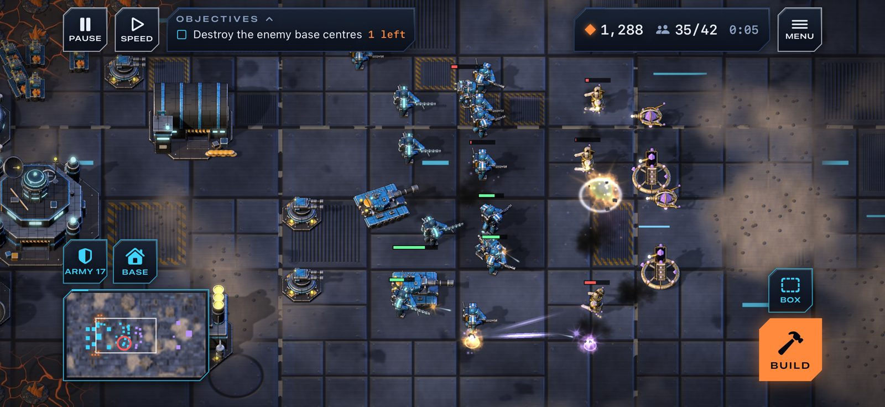

Real-time strategy · iPhone and iPad
The star is going out. Someone has to hold the Spire.
Nine hundred years ago, something began building a shell around the star Ilos and left it two-thirds done. Three peoples now live on its plates, and each has its own idea of what to do at the Spire, the one machine the builders left that still answers.

A Compact base holding against the Choir. Every unit and structure is a sculpted 3D model rendered for the game.
Three clans
Meridian Compact
Relight the star.Descendants of a stranded ark. Armour on everything, bases that repair themselves, rail weapons with long reach.
The Choir
Finish the work.The builders' own maintenance machines. Recharging shields, the longest guns on the field, and no interest in who lives inside the shell.
The Verdance
Leave before the dark.A terraforming swarm that woke up. Cheap, fast, and healing as it fights.
What is in it
- Campaign
- Fifteen missions, five for each clan, with briefings, radio calls that change the mission as you play, and three different endings.
- Skirmish
- Four battlefields in three sizes, against a computer opponent that builds and expands like a player, or a live opponent through Game Center.
- Pace
- Pause whenever you like and keep giving orders. Choosing a structure freezes the battle. Workers, fighters and structures carry on by themselves.
- Archive
- Every unit and structure with the numbers the battle uses and each clan's own notes.
- Price
- Missions 1 and 2 of every clan cost nothing. A clan's war charter ($2.99, bought once) opens its missions 3 to 5; any charter also opens skirmish.